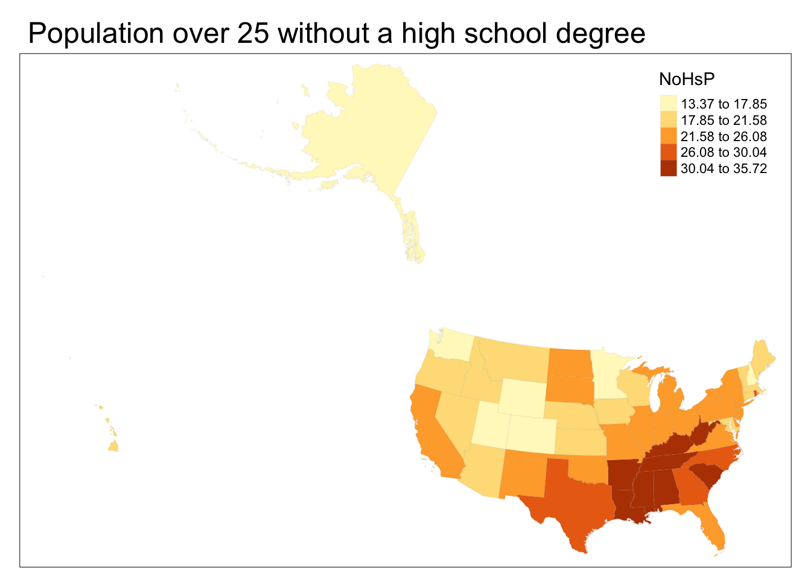

Chapter 3 Usage
oepsData is centered around two functions: load_oeps_dictionary, which loads a basic data dictionary; and load_oeps, which directly loads OEPS data. We expect that most users will start by calling load_oeps_dictionary to look at what data is available at their desired analysis scale, followed by calling load_oeps to actually load the data.
3.1 load_oeps_dictionary
load_oeps_dictionary itself takes one argument — scale — that can be any of “tract”, “zcta”, “county”, or “state”. It returns the data dictionary (stored as a data.frame), so we recommend browsing it through the View command:
# See what data is available at the state level
data_dictionary <- load_oeps_dictionary(scale="state")
# if working in RStudio, we recommend:
# View(data_dictionary)
# as we're in a bookdown, we just preview it directly:
data_dictionary3.2 load_oeps
We might find that we’re interested in the 1990 state data. We can load that data and its geometries using load_oeps, which accepts the following arguments:
- scale The scale of analysis. One of “tract”, “zcta”, “county”, or “state”
yearThe release year for the data. One of 1980, 1990, 2000, 2010, or 2018.themesThe theme to pull data for. One of ’Geography”, “Social”, “Environment”, “Economic”, “Policy”, “Composite”, or “All”. DefaultsAll.statesA string or vector of strings specifying which states to pull data for, either as FIPS codes or names. Ignored when scale is in ZCTA. DefaultsNone.countiesA string or vector of strings specifying which counties to pull data for, either as FIPS or names. Ignored for ZCTA, and must be specified alongsidestates. DefaultsNone.tidyBoolean specifying whether to return data in tidy format; defaults toFALSE.geometryBoolean specifying whether to pull geometries for the dataset. DefaultsFALSEcacheBoolean specifying whether to use cahced geometries or not. See the section on cacheing for more. DefaultsTRUE.
Which lets us operate on the data as we desire. For instance, we can make a simple map:
library(tmap)
#> Breaking News: tmap 3.x is retiring. Please test v4, e.g. with
#> remotes::install_github('r-tmap/tmap')
library(sf)
#> Linking to GEOS 3.11.0, GDAL 3.5.3, PROJ 9.1.0; sf_use_s2() is TRUE
# reproject to a better display CRS
states_1990 <- st_transform(states_1990, "ESRI:102004")
tm_shape(states_1990) +
tm_fill("NoHsP", style="jenks") +
tm_borders(alpha=0.05) +
tm_layout(main.title = "Population over 25 without a high school degree")